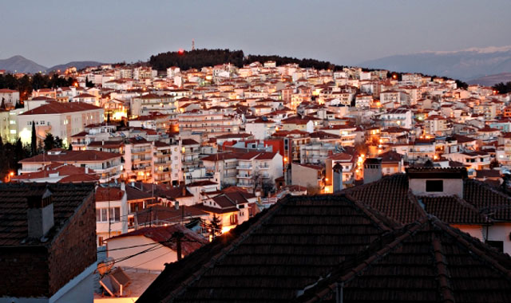

Η Κοζάνη είναι η πρωτεύουσα και μεγαλύτερη πόλη της περιφέρειας Δυτικής Μακεδονίας, καθώς και της ομώνυμης περιφερειακής ενότητας. Είναι χτισμένη ανάμεσα στις οροσειρές του Βερμίου, του Μπούρινου και των Πιερίων, 15 χλμ βορειοδυτικά της λίμνης του Πολυφύτου, σε υψόμετρο 720 μέτρων από την επιφάνεια της θάλασσας. Απέχει 120 χλμ από τη Θεσσαλονίκη και 470 χλμ από την Αθήνα. Έχει πληθυσμό 41.066 κατοίκους, ενώ ο νέος διευρυμένος Καλλικρατικός Δήμος έχει 75.388 κατοίκους (απογραφή 2011)
Στην πόλη στεγάζονται τμήματα του Πανεπιστημίου Δυτικής Μακεδονίας και του Τεχνολογικού Εκπαιδευτικού Ιδρύματος (ΤΕΙ) της ίδιας περιφέρειας. Επίσης είναι η έδρα της Αστυνομικής Διεύθυνσης, της Πυροσβεστικής Υπηρεσίας και του Εφετείου της Δυτικής Μακεδονίας, του 1ου Σώματος Στρατού της Ελλάδας και της Ιεράς Μητροπόλεως Σερβίων και Κοζάνης.